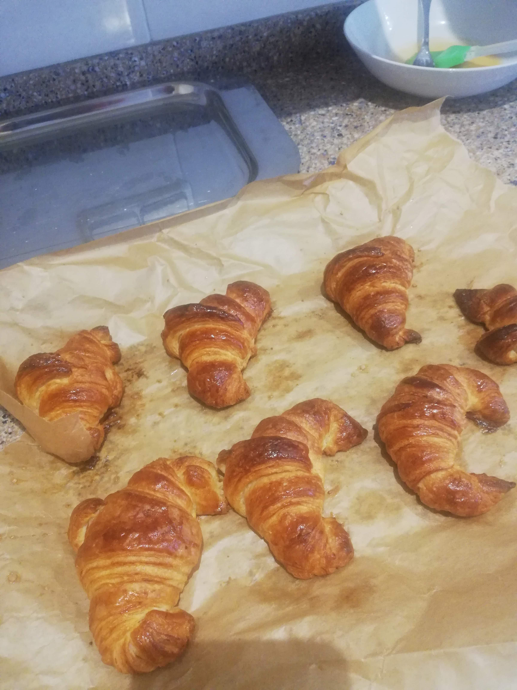

Croissants recipe

Description
Delicious sweets that you can share with your friends and family. Serve them with some hot chocolate and you will make your host cheer.
Takes a lot of effort to make but it's not the ending... it's the process :)
Ingredients
- 1kg of flour
- 1/3 of water for each kilo of flour
- 0.5Kg of butter
- 0.3Kg of sugar and salt
- A few eggs
Steps
- First, prepare the fish stock. It's easier if you buy it.
- Then, chop all the ingredients.
- Once your pan is hot, throw the shrimps and the cuttlefish. Sear them.
- Chop the onion and garlic cloves and add them to the pan.
- Add the tomato sauce until it reduces.
- Add the fish stock. When it starts boiling, add the noodles.
- Wait 20 minutes and serve.